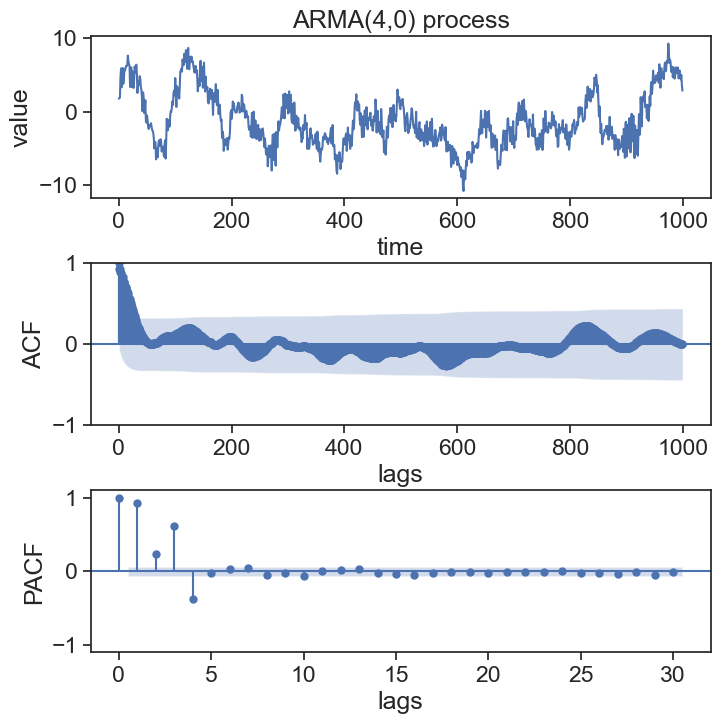
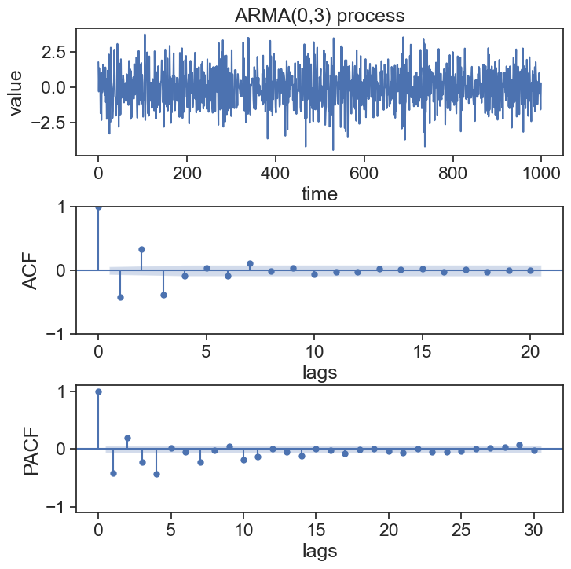
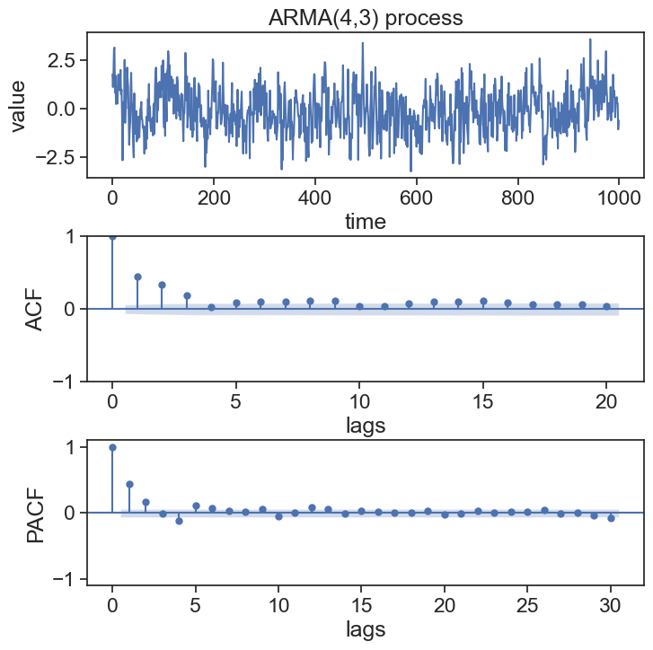
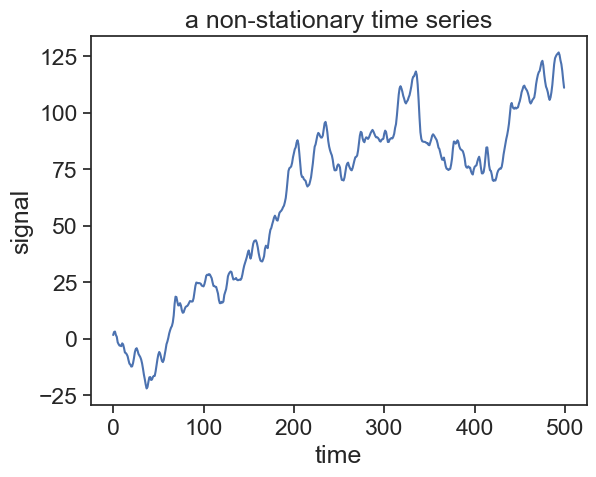
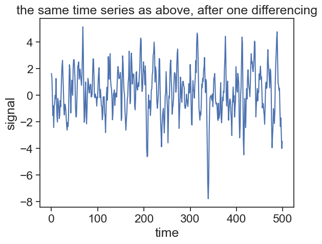
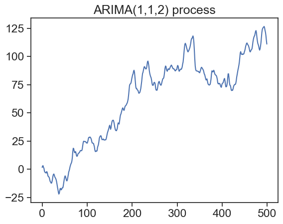
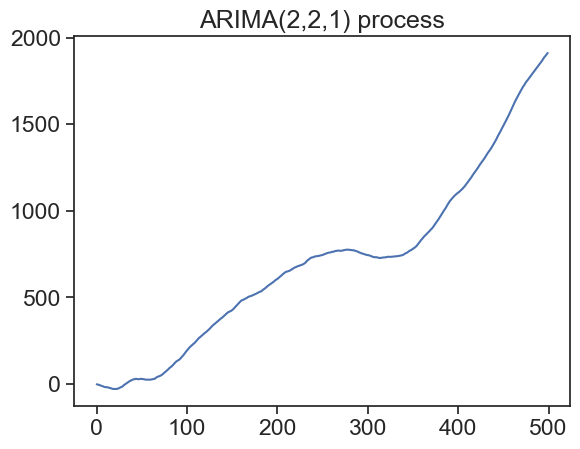

Up to this point, we learned what an AR process is, and how it relates to the concept of stationarity.
Our long term goal is to use these concepts to make forecasts (predictions) about the future. Before we do that, it is useful to talk about a generalization of the AR process, that better resembles real-life data.
28.1 AR(p)
An autoregressive process X is one that depend on p past states:
This has nothing to do with the sliding averages used for smoothing we studied before, it’s just the same name for a different concept.
Note that this equation is identical in structure to that of AR(p), but with weights \theta standing for \phi, and past noise \varepsilon_{t-i} standing in for past states X_{t-i}.
This process also has its characteristic polynomial:
The complex roots of this polynomial are also important. As long as the roots are outside the unit circle, the MA(q) process will be considered invertible, which is to say that it can be transformed into an AR(\infty) process.
The story is of course more complex than that. Using intelligent mathematical tricks (substitutions), one can change the noise term to make roots move from inside the unit circle to the outside, so effectively there shouldn’t be any problems as long as there aren’t any roots exacly on the unit circle.
28.3 ARMA(p,q)
An ARMA(p,q) process is simply the combination of an AR(p) and an MA(q) process:
The graphs for the autocorrelation and partial autocorrrelation functions can be very useful to identify the order p and q of an ARMA(p,q) process.
import stuff
import numpy as npimport statsmodels.api as smimport matplotlib.pyplot as pltimport matplotlib.gridspec as gridspecimport seaborn as snssns.set(style="ticks", font_scale=1.5) # white graphs, with large and legible lettersimport statsmodels.api as smfrom statsmodels.tsa.arima_process import ArmaProcessfrom statsmodels.tsa.stattools import adfuller
generate ARMA(4,0) process
np.random.seed(0)n =1000# number of data pointsphi_list = np.array([0.8, -0.28, 0.8, -0.36])ar_coefs = np.insert(-phi_list, 0, 1) # AR coefficients. append 1 at the beginningma_coefs = [1] # MA coefficientsarma_process = ArmaProcess(ar_coefs, ma_coefs)data = arma_process.generate_sample(nsample=n)fig, axes = plt.subplots(3, 1, figsize=(8, 8))fig.subplots_adjust(hspace=0.4) # increase vertical space between panelsax1 = axes[0]ax1.plot(data)ax1.set(xlabel='time', ylabel='value', title='ARMA(4,0) process', )# plot ACF and PACF graphsax2 = axes[1]sm.graphics.tsa.plot_acf(data, lags=n-1, ax=ax2, title=None)ax2.set(ylabel="ACF", xlabel="lags")ax3 = axes[2]sm.graphics.tsa.plot_pacf(data, lags=30, ax=ax3, title=None)ax3.set(ylim=[-1.1, 1.1], ylabel='PACF', xlabel="lags");

Note that for the ARMA(4,0) process, the last significant PACF value is at lag \tau=4.
generate ARMA(0,3) process
np.random.seed(0)n =1000# number of data pointstheta_list = np.array([0.4, -0.3, 0.8])ma_coefs = np.insert(-theta_list, 0, 1) # MA coefficients. append 1 at the beginningar_coefs = [1]arma_process = ArmaProcess(ar_coefs, ma_coefs)data = arma_process.generate_sample(nsample=n)fig, axes = plt.subplots(3, 1, figsize=(8, 8))fig.subplots_adjust(hspace=0.4)ax1 = axes[0]ax1.plot(data)ax1.set(xlabel='time', ylabel='value', title='ARMA(0,3) process', )# plot ACF and PACF graphsax2 = axes[1]sm.graphics.tsa.plot_acf(data, lags=20, ax=ax2, title=None)ax2.set(ylabel="ACF", xlabel="lags")ax3 = axes[2]sm.graphics.tsa.plot_pacf(data, lags=30, ax=ax3, title=None)ax3.set(ylim=[-1.1, 1.1], ylabel='PACF', xlabel="lags");

For the ARMA(0,3) process, the last significant ACF value is at lag \tau=3.
generate ARMA(4,3) process
np.random.seed(0)n =1000# number of data pointstheta_list = np.array([0.4, -0.3, 0.8])phi_list = np.array([0.8, -0.28, 0.8, -0.36])ar_coefs = np.insert(-phi_list, 0, 1) # AR coefficientsma_coefs = np.insert(-theta_list, 0, 1) # MA coefficientsarma_process = ArmaProcess(ar_coefs, ma_coefs)data = arma_process.generate_sample(nsample=n)# Create a single figure with panelsfig, axes = plt.subplots(3, 1, figsize=(8, 8))fig.subplots_adjust(hspace=0.4)# Plot the ARMA processax1 = axes[0]ax1.plot(data)ax1.set(xlabel='time', ylabel='value', title='ARMA(4,3) process', )# Plot ACF and PACF graphsax2 = axes[1]sm.graphics.tsa.plot_acf(data, lags=20, ax=ax2, title=None)ax2.set(ylabel="ACF", xlabel="lags")ax3 = axes[2]sm.graphics.tsa.plot_pacf(data, lags=30, ax=ax3, title=None)ax3.set(ylim=[-1.1, 1.1], ylabel='PACF', xlabel="lags");

This table from Shumway and Stoffer (2017, 108) is useful to sum up what we’ve learned so far.
AR(p)
MA(q)
ARMA(p,q)
ACF
gradually goes down
cuts off after lag q
gradually goes down
PACF
cuts off after lag p
gradually goes down
gradually goes down
28.5 Non-stationary data and ADF test
The following is partially based on Chatfield (2016, chap. 3, page 63).
What do we do if it turns out that our data is not stationary? Heck, how can we even tell if our data is stationary or not? The most common stationarity test is the Augmented Dickey–Fuller (ADF) test. This is not a trivial subject that can be completely understood in a few words, so I’ll give the very basic intuition here.
A stationary time series has a constant mean \mu. If at a given instant t our state X_t is way above the mean, we would expect that, with a high probability, the next step brings it closer to the mean. This is to say that the the difference between two consecutive states X_t-X_{t-1} depends on the value of X_t! Nonstationary time series do not show this behavior: the differences between two time steps do not depend on the state value. The idea described here is for the Dickey-Fuller test. The Augmented Dickey-Fuller test is basically the same, but for time lags p between states, not only 1.
The ADF test has a null hypothesis that the time series is not stationary. By applying the test to a given time series, we get a p-value as one of the results. The smaller the p-value, the more evidence we have to reject the null hypothesis, and therefore conclude that our time series is indeed stationary.
Let’s see an example:
Show the code
# Generate ARIMA(1,1,2) process with differencingN =500np.random.seed(1)arima_112_diff = sm.tsa.arma_generate_sample(ar=[1, -0.5], ma=[1, 0.7, 0.3], nsample=N)arima_112 = np.cumsum(arima_112_diff)fig, ax = plt.subplots()ax.plot(arima_112)ax.set(xlabel="time", ylabel="signal", title="a non-stationary time series")plt.show()result = adfuller(arima_112)print('p-value: ', result[1])

p-value: 0.591478751185507
So what do we do if we have a non-stationary time series? One common solution is to apply successive differencing operations, until the outcome becomes stationary.
Let’s define the difference operator \nabla as
\nabla X_t = X_t - X_{t-1}.
Now recalling that the backward shift operator B is defined as
If we apply the difference operator d times, then we denote this as
W_t = \nabla^d X_t = (1-B)^d X_t.
Let’s apply the difference operator once to the time series plotted above, and then apply the ADF test.
Show the code
fig, ax = plt.subplots()ax.plot(arima_112_diff)ax.set(xlabel="time", ylabel="signal", title="the same time series as above, after one differencing")plt.show()result = adfuller(arima_112_diff)print('p-value: ', result[1])

p-value: 4.7341140554650393e-14
28.6 ARIMA(p,d,q)
We are ready to describe an Autoregressive (AR) Integrated (I) Moving Average (MA) process:
Rearranging the terms in this equation, we can also express an ARIMA(p,d,q) process as
\phi(B)(1-B)^d X_t = \theta(B)\epsilon_t.
Let’s try to put this in a context we already know. We saw that a random walk is the integrated version of a white noise. The random walk can be interpreted as a special case of an AR(1) process for \phi=1. However, an AR process is usually called as such when it is stationary. Because a white noise can be understood as an ARMA(0,0) process, and because differencing the random walk yields a white noise, we can say that the white noise is an ARIMA(0,1,0) process.
Let’s see two examples of ARIMA processes.
Show the code
# Generate ARIMA(2,2,1) process with differencingarima_221_diff = sm.tsa.arma_generate_sample(ar=[1, -0.18, 0.06], ma=[1, -0.5], nsample=N)# arima_221 = np.cumsum(arima_221_diff) arima_221 = np.cumsum(np.cumsum(arima_221_diff)) # # Plot the ARIMA(1,1,2) processfig, ax = plt.subplots()ax.plot(arima_112)ax.set_title('ARIMA(1,1,2) process')plt.show()# Plot the ARIMA(2,2,1) processfig, ax = plt.subplots()ax.plot(arima_221)ax.set_title('ARIMA(2,2,1) process')plt.show()


We will not fully delve into forecasting right now, but it would be nice to see a real application of ARIMA. If we can reasonably well estimate the parameters associated with a given ARIMA(p,d,q) process, we can use this knowledge to predict future states within a confidence interval. In the simulations below, we see forecasts an ARIMA(2,2,0) process.